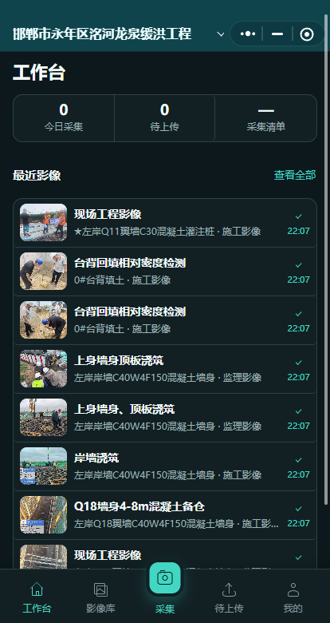

四大专业
每个专业，按自己的现场来归档
点击卡片查看对应专业。卡片里的现场照片会轮流显示，鼠标放上去会暂停。


核心能力
上传与队列
全局或单元上传。水印能给出候选，对不上的照片进待分类，确认后再入库。
检索查找
按工程、单元、工序、题名、拍摄者和日期查找。
打印方案
单元内可打印当前图库或勾选照片。跨单元批量打印需要开通会员。
导出交付
照片统计表、单元压缩包和工程资料包都可以导出。
桌面端
工程结构就是档案目录
从单位工程到分部、单元，每张现场照片都挂在对应位置上。


现场采集
微信小程序
电脑上建好工程并绑定云账号后，现场人员用同一账号打开小程序。照片先留在手机队列里，网络恢复后再上传。别的账号看不到这个工程。



先下载，再按使用说明建第一个工程
安装包、Word 教程和小程序码都在下载页。